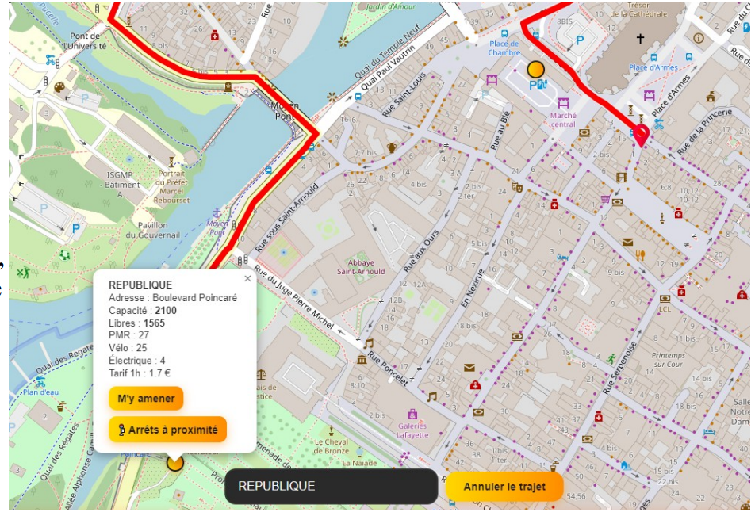
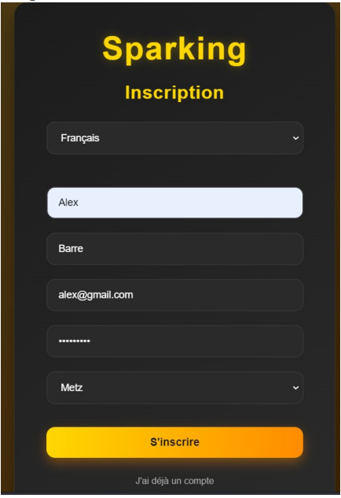
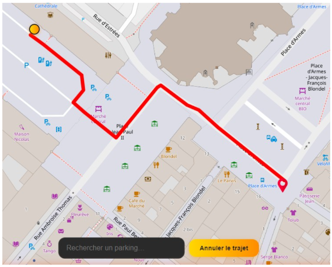
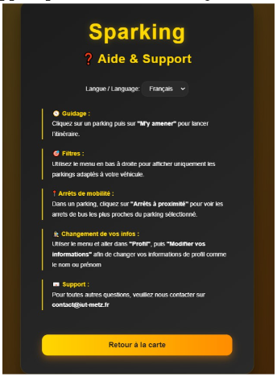

Sparking
Durant notre dernier projet de la 2ème année de BUT Informatique, nous avons développé une application pour la gestion du stationnement urbain. Qui permet d'aider les utilisateurs à trouver le parking le plus proche de leur position, avec différents critères possibles, en France et à Londres, sur une carte en open source du nom de Leaflet.

Ce que j'ai fait
Pour ce projet d'équipe, j'ai pu réaliser la partie programmation en full-stack avec un collègue. Je me suis concentré sur la partie back-end et notre base de données, et lui sur la partie front-end du projet. La plus grande partie de mon travail a consisté à connecter différentes API publiques afin de récupérer les différentes informations sur les parkings en France et à Londres et pouvoir ensuite utiliser ces informations sur notre application pour que l'utilisateur puisse accéder aux filtres des parkings.
J'ai également mis en place le système de route sur notre application, pour que l'utilisateur ait un trajet entre sa position et celle du parking souhaité. Avec cela j'ai ajouté la possibilité de rechercher le parking le plus proche de la position de l'utilisateur, permettant à celui-ci de trouver un parking rapidement même sans connaitre la ville où il se trouve. Il a aussi fallu rajouter dans les contraintes du projet, la recherche des points de mobilité proches des parkings de notre application, comme les arrets de bus les plus proches ce qui permet de rajouter un autre avantage à notre appli.
Enfin, on a réalisé avec mon collègue toute l'interface à notre appli, comme la possibilité de regarder ses informations sur notre profil et de pouvoir modifier son mot de passe ou email si nécessaire, ou encore que l'application soit responsive pour une utilisation sur tous types d'appareils.
Les difficultés
La grande difficulté de ce projet à été sur l'utilisation des API, c'était la première fois qu'on en utilisait et il a fallu regarder de nombreuses vidéos sur le sujet et poser des questions à l'IA pour nous aider sur cette partie. Mais après plusieurs soucis, comme une mauvaise utilisation des clés de l'API, des requêtes mal écrites et une organisation des fichiers de requetes peu optimaux, on a réussi avec du temps à régler tous les problèmes un par un, et à correctement utiliser les différentes API et à accéder aux informations des parkings.
On a aussi eu d'autres difficultés moins importantes mais quand meme très embetantes, comme avec l'affichage des arrets à proximité des parkings où l'on a eu beaucoup de problèmes, qui étaient dus à des erreurs dans notre fonction avec le calcul des arrêts les plus proches et donc qui rendait l'affichage problématique, on a finalement résolu ce soucis en prenant le temps de revoir tout le code, et en s'aidant de l'IA pour nous faire gagner du temps sur notre recherche.
Conclusion
Pour conclure ce projet, celui-ci m'a énormément apporté en compréhension des API, avec l'utilisation des requetes, comment on récupère les données et comment on les réutilise sur notre application afin de les afficher sur une carte. J'ai également appris comment utiliser cette carte et afficher des points dessus en utilisant la documentation de la carte, ici Leaflet. J'ai également pu revoir la création d'applications, l'affichage dynamique, créer et entretenir une base de données contenant des données utilisateurs importantes et de nombreuses informations sur un élément précis, ici les parkings.
Pour finir, j'ai revu la gestion d'un GitHub en équipe, avec des commits réguliers, une répartition des tâches entre les différents membres de l'équipe et comment organiser la réalisation d'un projet sur plusieurs mois à l'aide d'outils externes.
Galerie


